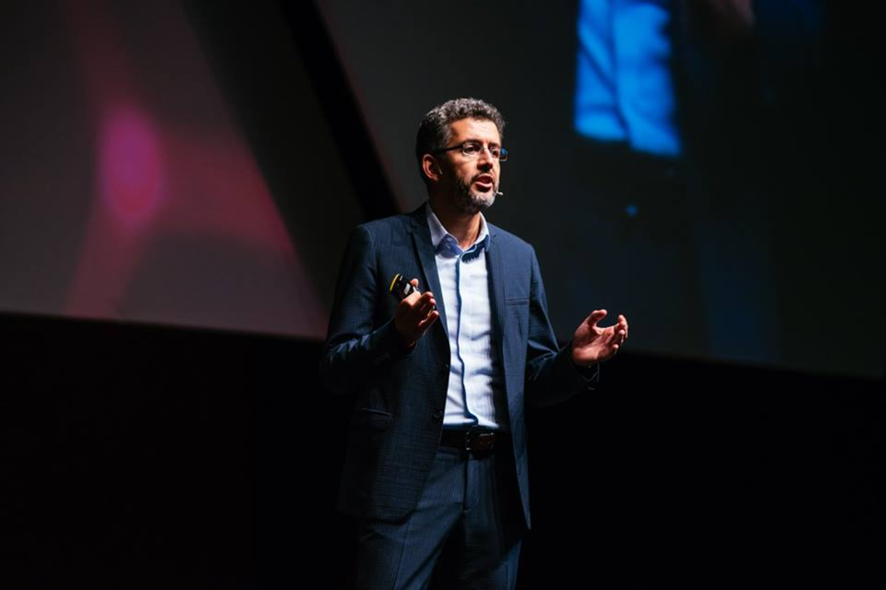
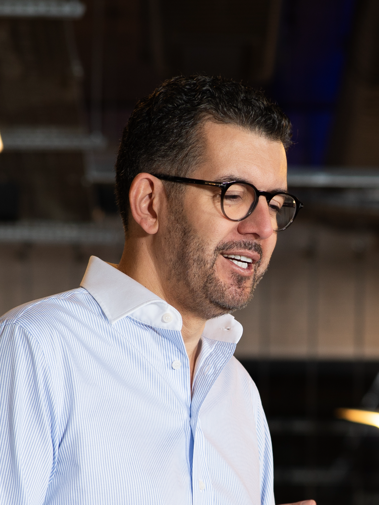
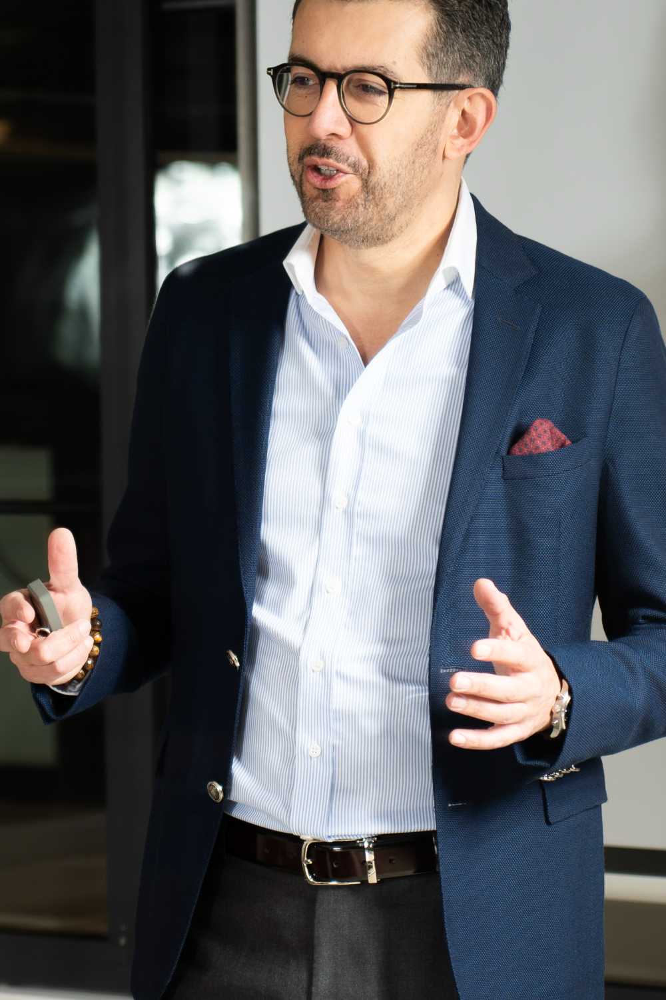

Dubai · United Arab Emirates
Burak
Dayioglu
I build security software.
I back early B2B founders.
30y
in cybersecurity
2
exits
10+
startups backed
Background
I have spent thirty years building, breaking and securing digital infrastructure — and then building companies on top of what I learned. I started in network and systems security in 1995, moved into the security of software development in the early 2000s, and have been shipping products for security teams ever since.
Along the way I became one of the founders of the Turkish Linux Users Association, a proud one. Open source is where I learned that infrastructure is a public good, that reputation is earned in the open, and that a community will outlast any single company built on top of it.
In 2007 I founded Innovera and grew it into one of Turkey's largest cybersecurity integrators. Out of that team came ATAR Labs, one of the world's first security operations automation platforms (SOAR), acquired by Micro Focus; Innovera itself later joined Cyberwise. Today I am co-founding Metric Maestro, and I invest in early B2B software companies.

Now
Co-founder
Metric Maestro — the measurement layer for security. Same formula every time, a history that survives tool swaps, and every number traceable to its source.
Angel investor
Early cheques into B2B software companies. In security I bring an operator's depth, having built and exited in the domain twice. Outside it, what transfers is the part that is the same everywhere: turning good software into a company enterprises buy from. I earn my place in the first year or two — getting the foundations right, landing the early customers, and running a VC round.
Advisor
Only for companies I am a shareholder in. If I am going to be useful, I would rather own part of the outcome than bill for the hours.
Track record
Security engineering 1995 – 2007
Innovera 2007 – 2020 · exit to Cyberwise
ATAR Labs 2016 – 2019 · exit to Micro Focus
Angel investing 2020 – now
Metric Maestro 2025 – now

Contact
Most of what I know came from people who took a stranger's approach seriously, by email or otherwise. I try to return the favour.
Write to think something through, to compare notes on security or company building, or to ask for help if I am the right person to ask. Short notes are welcome, and I answer them all.
This domain exists to host my mail. If a message reached you from , it was from me.
© 2026 Burak Dayioglu